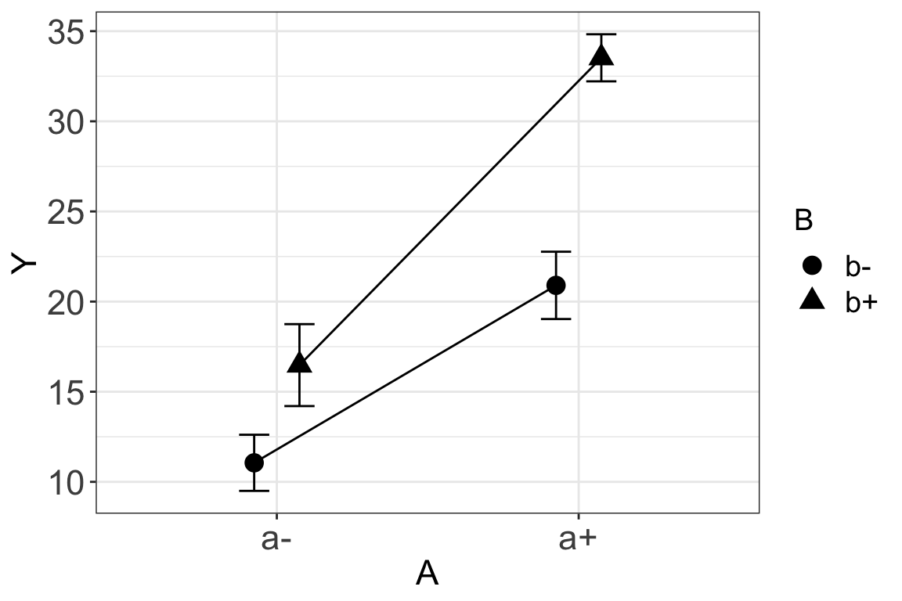
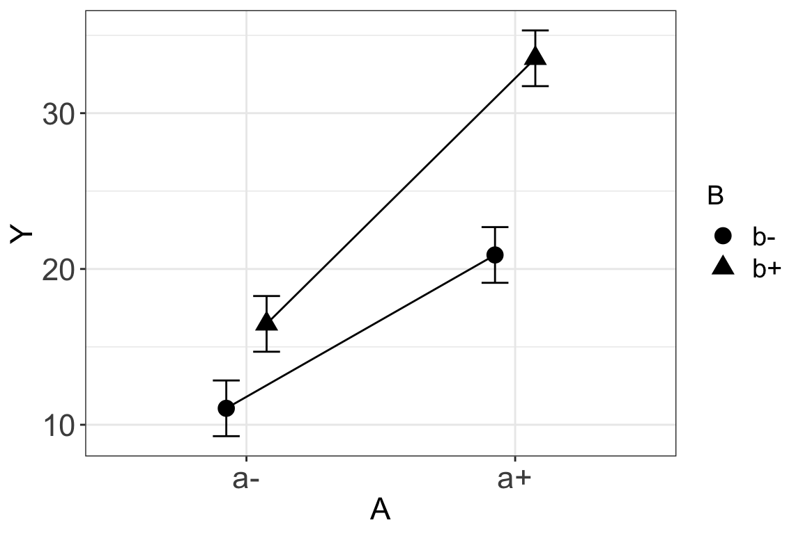

Chapter 5 Plotting
5.1 Plots should be the center of your paper’s universe
library(ggplot2)
library(ggpubr)
library(emmeans)
library(data.table)
data_path <- "../data" # notebook
data_path <- "data" # bookdown5.2 Pretty good plots show the data
The first plot combines 1. “Cleveland dot plot” of the group means 2. unconditional 1 SE error bar.
ggerrorplot(x="treatment", y="Y", data=fd, add="mean", desc_stat = "mean_se", error.plot = "errorbar")Figure 5.1: A simple Cleveland dot plot of group means and standard error. The standard error bars are the unconditional or unmodeled SE.
The second plot combines 1. “Cleveland dot plot” of the group means 2. unconditional 1 SE error bar. 3. jittered dots of the raw data points
The advantage of this plot of
ggerrorplot(x="treatment", y="Y", data=fd, add=c("mean", "jitter"), desc_stat = "mean_se", error.plot = "errorbar")Figure 5.2: A Cleveland dot plot of group means and standard error.with superimposed dot plot of raw values that “show the data”.
5.3 Even better plots…
5.3.1 Let interaction plots be interaction plots
The levels of the treatment variable indicate that the experimental design is factorial with all four combinations of two factors (\(A\) and \(B\)) each with two treatment levels. The two plots above fail to capture this aspect of the data. There are several ways of doing this, including using different colors or shapes for the different levels of one factor and spatially clustering the levels of one factor within the other on the graph. Additionally, the whole purpose of a factorial design is to measure the interaction effect. The magnitude of the interaction can be qualitatively visualized by comparing the lines connecting the group means among the levels of one factor within a level of the other factor. I don’t think ggpubr does this, so here is a function.
gg_interaction <- function(x, y, random=NULL, data, se="model"){
# x is a vector of the column labels of categorical variables
# y is the response column
# random is a column name of a blocking factor
# data is a data.frame or data.table
# se is "model" or "sample"
dt <- na.omit(data.table(data[, .SD, .SDcols=c(x,y)]))
fixed_part <- paste(y, "~", paste(x[1], x[2], sep="*"))
if(is.null(random)){ # linear model
lm_formula <- formula(fixed_part)
fit <- lm(lm_formula, data=dt)
}else{ ## linear mixed model
random_part <- paste("(1|", random, ")", sep="")
lmm_formula <- formula(paste(fixed_part, random_part, sep=" + "))
fit <- lmer(lmm_formula, data=dt)
}
# get modeled means and se
fit.emm <- data.table(summary(emmeans(fit, specs=x)))
new_names <- c("f1", "f2")
setnames(fit.emm, old=x, new=new_names)
# get sampled means and se
dt_sum <- dt[, .(emmean=mean(get(y)), # conditional mean but giving the name in fit.emm
sd=sd(get(y)),
SE=sd(get(y))/sqrt(.N)),
by=.(get(x[1]), get(x[2]))]
setnames(dt_sum, old=c("get", "get.1"), new=new_names)
if(se=="model"){dt_sum <- fit.emm}
pd <- position_dodge(.3)
gg <- ggplot(data=dt_sum, aes(x=f1, y=emmean, shape=f2, group=f2)) +
#geom_jitter(position=pd, color='gray', size=2) +
geom_point(color='black', size=4, position=pd) +
geom_errorbar(aes(ymin=(emmean-SE), ymax=(emmean+SE)),
color='black', width=.2, position=pd) +
geom_line(position=pd) +
xlab(x[1]) +
ylab(y) +
theme_bw() +
guides(shape=guide_legend(title=x[2])) +
theme(axis.title=element_text(size = rel(1.5)),
axis.text=element_text(size = rel(1.5)),
legend.title=element_text(size = rel(1.3)),
legend.text=element_text(size = rel(1.3))) +
NULL
return(gg)
}gg_interaction(x=c("A","B"), y="Y", data=fd, se="sample")
Figure xxx, with lines connecting cell means, is often called an “interaction plot” and this plot type is common in ecology and organismal biology but not so common in cell biology and physiology. A Harrell plot (see below) is even better for communicating interaction effects.
5.3.2 Even better plots (continued)…Show the model
The SE error bars above are computed for each group independently. If we are going to bother fitting a model to the data and reporting modeled statistics in the text, it makes sense to also report these modeled statistcs in the figures since…figures should be the center of the paper’s universe.
The plots below, use modeled SEs from the the fit model. Think about it like this, the linear model has some error \(\varepsilon\) which has some standard deviation \(\sigma\). The standard error computed for a group is \(\frac{s_k}{\sqrt{n}}\) where \(s_k\) is the sampled estimate of \(\sigma\) for that group. The modeled SE for a group uses the modeled estimate of \(\sigma\) for every group instead of that group’s sampled \(s_k\). So, if \(n\) is the same in each group then the modeled SE is the same for each group. So what is the modeled SE? If is the standard deviation of the residuals of the model \(\sqrt{\frac{ss_{residual}}{df_{residual}}}\).
Pretending the four treatment levels are not from a factorial design:
# pretend the four treatment levels are not from a factorial design
fit <- lm(Y~treatment, data=fd)
fit.emm <- data.table(summary(emmeans(fit, specs="treatment")))
fit.emm[, treatment:=factor(treatment, as.character(levels(fd$treatment)))]
# the modeled SE is right there in fit.emm
gg <- ggplot(data=fit.emm, aes(x=treatment, y=emmean)) +
geom_point(size=3) +
geom_errorbar(aes(ymin=emmean-SE, ymax=emmean+SE), width=0.2) +
theme_classic(base_size=14) +
geom_jitter(data=fd, aes(x=treatment, y=Y), width=0.2) +
NULL
gg
Interaction plot
gg_interaction(x=c("A","B"), y="Y", data=fd, se="model")